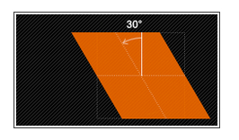

与CSS动画相关的知识有transform，transition，以及animation
transform
- translate() // 移动：将HTML元素在x-y轴平面上做位移，且不会影响到其他元素
translate(x,y)水平方向和垂直方向同时移动（也就是X轴和Y轴同时移动）translateX(x)仅水平方向移动（X轴移动）translateY(y)仅垂直方向移动（Y轴移动）
|
|
- rotate() // 旋转
- 需先有
transform-origin属性的定义。transform-origin定义的是旋转的基点 - 如果设置的值为正数表示顺时针旋转，如果设置的值为负数，则表示逆时针旋转；
- 需先有
|
|
- scale() // 缩放
scale(x,y)使元素水平方向和垂直方向同时缩放（也就是X轴和Y轴同时缩放）scaleX(x)元素仅水平方向缩放（X轴缩放）scaleY(y)元素仅垂直方向缩放（Y轴缩放)- 它们具有相同的缩放中心点和基数，其中心点就是元素的中心位置
- 缩放基数为1，如果其值大于1元素就放大，反之其值小于1，元素缩小
|
|
- skew() // 扭曲，斜切变换
- skew(x,y)使元素在水平和垂直方向同时扭曲（X轴和Y轴同时按一定的角度值进行扭曲变形）
- skewX(x)仅使元素在水平方向扭曲变形（X轴扭曲变形）
- skewY(y)仅使元素在垂直方向扭曲变形（Y轴扭曲变形）
|
|

- matrix() // 矩阵变形